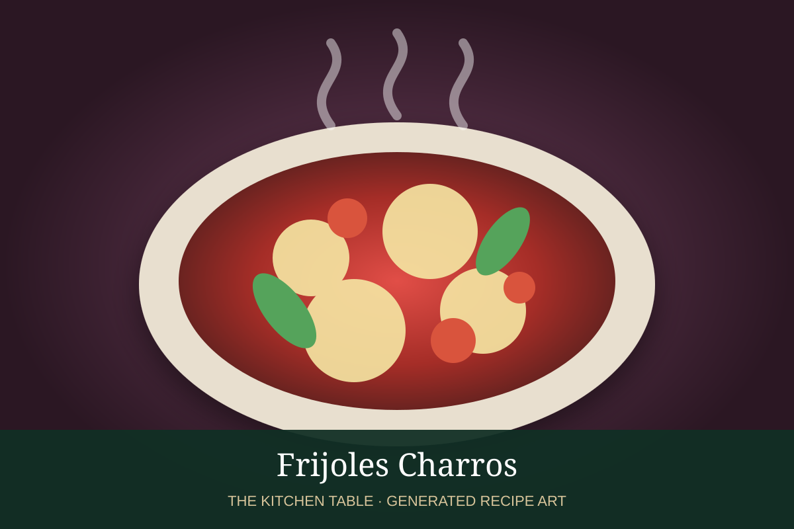

← Back to all recipes
BEANS · MEXICAN
Frijoles Charros
Pinto beans simmered with bacon, chorizo, tomato, jalapeño, onion, and cilantro.
1 hrServes 8

Photo: Don Zabor
Ingredients
- 4 cups cooked pinto beans with broth
- 6 oz bacon, chopped
- 6 oz Mexican chorizo
- 1/2 onion, diced
- 2 Roma tomatoes, diced
- 1 jalapeño, diced
- 2 garlic cloves
- 1/2 cup cilantro
- Salt
Preparation
- Cook bacon until crisp; add chorizo and brown.
- Add onion, jalapeño, and garlic and cook until soft.
- Add tomatoes and cook until juicy.
- Stir in beans and enough broth for a soupy consistency.
- Simmer 20 minutes and finish with cilantro.